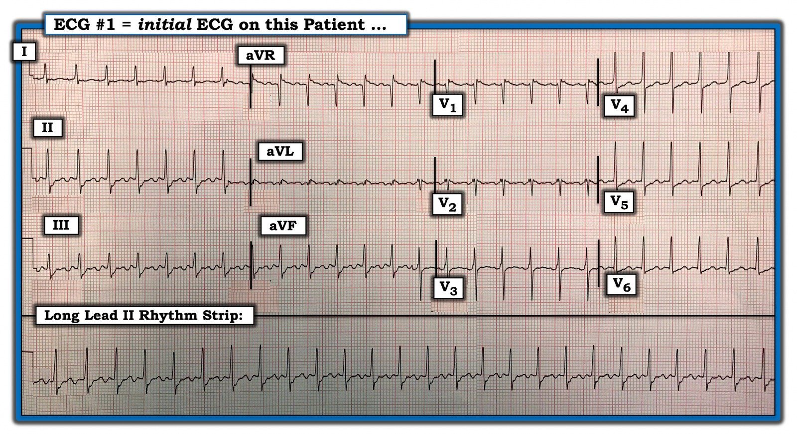
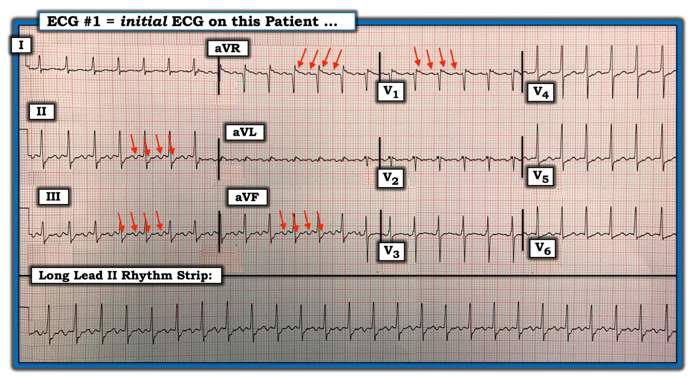
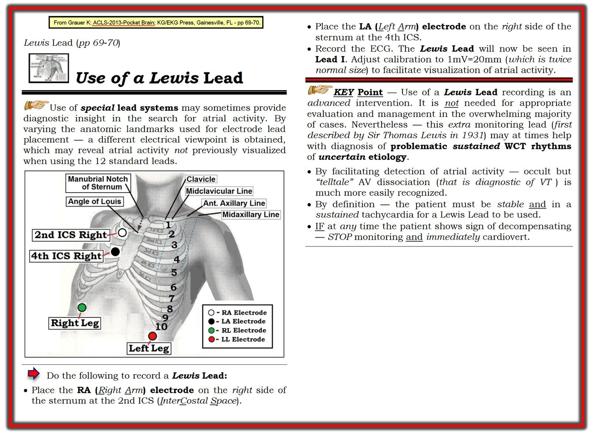

12/11/2019 — Nhịp SVT đều này là gì?
Bản dịch tiếng Việt của bài "What is this Regular SVT?" – Dr. Smith’s ECG Blog. Giữ nguyên toàn bộ 3 hình ảnh của bản gốc.
======================================
BÌNH LUẬN CỦA TÔI, bởi KEN GRAUER, MD (12/11/2019 — cập nhật cho WordPress ngày 29/10/2025):
Xin cảm ơn Kenneth Khoo (Malaysia) đã chia sẻ ca bệnh hôm nay. Bệnh nhân này ổn định huyết động. Các nhân viên y tế tại cơ sở của anh ấy đã tranh luận với nhau xem nhịp trên điện tâm đồ này là gì (Hình 1).
- BẠN nghĩ nhịp này là gì?
- Chẩn đoán phân biệt gồm những gì?
- Vì sao bạn có thể gần như chắc chắn nhịp này là gì ngay cả trước khi điều trị và trước khi làm bất kỳ nghiệm pháp chẩn đoán nào?
= = =
Hình 1: Điện tâm đồ ban đầu của ca bệnh hôm nay.


= = =
Cách tiếp cận của tôi đối với nhịp hôm nay:
Tôi đã ôn lại những điều cơ bản để đọc nhịp trong ca ngày 16 tháng Mười năm 2019 trên Dr. Smith’s ECG Blog. Tóm lại — một khi bạn đã chắc chắn bệnh nhân ổn định huyết động (như bệnh nhân này) — chúng ta cần đánh giá 5 thông số MẤU CHỐT còn lại. Tôi ưa dùng mẹo ghi nhớ này, “Hãy để ý P, Q và 3 R”:
- LƯU Ý: Bạn đánh giá 5 thông số MẤU CHỐT này theo thứ tự nào thì không quan trọng — và tôi thường thay đổi thứ tự mình dùng tùy theo bản ghi (tức là, Trong 5 thông số này, thông số nào dễ đánh giá nhất trên bản ghi đang ở trước mặt bạn?).
- Với bản ghi ở Hình 1 — nhịp đều (Regular) hoàn toàn. Khoảng R-R gần như đúng bằng 2 ô lớn — nghĩa là tần số (Rate) thất là 300/2 ~150/phút. Phức bộ QRS hẹp — vì vậy nhịp này là nhịp trên thất! Không thấy hoạt động nhĩ bình thường — vì không có sóng P xoang (tức là, sóng P không dương rõ ở chuyển đạo II …) rõ ràng.
= = =
CÂU HỎI:
- Cho đến lúc này, phân tích trên gợi ý điều gì cho BẠN?
= = =
= = =
TRẢ LỜI:
Chúng ta đã xác định bệnh nhân này ổn định huyết động. Nhịp ở Hình 1 là một SVT (nhịp nhanh trên thất — SupraVentricular Tachycardia) đều tần số ~150/phút không có dấu hiệu rõ ràng của sóng P xoang. Chẩn đoán phân biệt chính tương tự như những gì chúng ta đã rút ra trong ca ngày 16 tháng Mười năm 2019: i) Nhịp nhanh xoang; ii) SVT vào lại (hoặc là AVNRT nếu vòng vào lại nằm gọn trong đường dẫn truyền bình thường của nút AV — hoặc AVRT nếu có đường phụ tham gia); iii) Nhịp nhanh nhĩ; — hoặc, iv) Cuồng nhĩ.
- ĐIỂM THEN CHỐT (PEARL) #1: Khác biệt chính giữa ca này và ca chúng tôi trình bày ngày 16 tháng Mười — là tần số thất rất gần với 150/phút. Rối loạn nhịp tim bền bỉ hay bị bỏ sót nhất (bỏ xa các rối loạn nhịp khác) là cuồng nhĩ (AFlutter)! Qua nhiều năm — tôi đã thấy rất nhiều bác sĩ tim mạch bỏ sót nhịp này (đặc biệt là những bác sĩ tim mạch không thường quy dùng compa đo (calipers) để đánh giá các rối loạn nhịp phức tạp). Tôi hoàn toàn thừa nhận rằng chính tôi cũng từng bỏ sót cuồng nhĩ.
- Cách TỐT NHẤT để không bao giờ bỏ sót chẩn đoán cuồng nhĩ trên điện tâm đồ là: i) Hãy nghĩ đến chẩn đoán này thường xuyên! — và, ii) Hãy mặc định rằng bất kỳ nhịp SVT đều nào không thấy rõ sóng P xoang đều là cuồng nhĩ cho đến khi chứng minh được điều ngược lại — đặc biệt NẾU tần số thất của nhịp SVT đều này gần 150/phút (thường trong khoảng ~140-160/phút — nhưng đôi khi trong khoảng ~130-170/phút).
- ĐIỂM THEN CHỐT (PEARL) #2: Lý do tần số thất trong cuồng nhĩ thường gần 150/phút đến vậy — là vì: i) Tần số nhĩ của cuồng nhĩ chưa điều trị hầu như luôn gần ~300/phút (tức là, trong khoảng 250-350/phút) — và, ii) Cuồng nhĩ chưa điều trị thường gặp nhất là dẫn truyền với đáp ứng thất 2:1 (tức là, tần số nhĩ ~300/phút — do đó tần số thất ~300/2 = ~150/phút).
- ĐIỂM THEN CHỐT (PEARL) #3: Tần số nhĩ dự kiến của cuồng nhĩ có thể thay đổi NẾU bệnh nhân đã được “điều trị” — khi đó tần số thất trong cuồng nhĩ dẫn truyền AV 2:1 có thể chậm hơn (nếu bệnh nhân đang dùng thuốc chống loạn nhịp) — hoặc thậm chí có thể nhanh hơn (nếu bệnh nhân đã được điều trị bằng triệt đốt).
= = =
CÂU HỎI: Chúng ta đã nói rằng không thấy sóng P xoang bình thường ở nhịp trong Hình 1 — vì không có sóng P dương rõ ở chuyển đạo II.
- Điều này có nghĩa là không có hoạt động nhĩ trong Hình 1?
= = =
TRẢ LỜI: Dường như có rất nhiều “sóng lệch thừa” ở một số chuyển đạo trên điện tâm đồ #1 …
- ĐIỂM THEN CHỐT (PEARL) #4: Cách TỐT NHẤT mà chúng tôi biết để nhanh chóng xác định xem những “sóng lệch thừa” mà ta có vẻ đang thấy trên điện tâm đồ #1 có phải là hoạt động nhĩ hay không — là dùng compa đo!
= = =
Chúng tôi trình bày kết quả của việc dùng compa đo ở Hình 2:
= = =
Hình 2: Các mũi tên ĐỎ cho thấy những “sóng lệch thừa” quả thực xuất hiện đều đặn ở nhiều chuyển đạo.


= = =
Tìm kiếm sóng cuồng nhĩ: Có thể xác lập chẩn đoán cuồng nhĩ ở một SVT đều tần số ~150/phút — NẾU bạn nhận diện được hoạt động nhĩ đều tần số ~300/phút. Không có gì khác tạo ra hoạt động nhĩ đều với tần số nhanh như vậy (Nhịp nhanh nhĩ hiếm khi nhanh hơn 250/phút).
- ĐIỂM THEN CHỐT (PEARL) #5: Cách tôi tìm sóng cuồng nhĩ là cẩn thận đặt compa đo đúng bằng chính xác MỘT NỬA khoảng R-R của SVT đều đó (vì NẾU nhịp là cuồng nhĩ — thì tần số nhĩ phải gấp đôi tần số thất khi có dẫn truyền AV 2:1). Các mũi tên ĐỎ ở Hình 2 xác nhận rằng quả thực có hoạt động nhĩ 2:1 trên bản ghi này — điều đó cho chúng ta biết, ngay cả trước khi làm nghiệm pháp cường phế vị hay tiêm Adenosine (hoặc thuốc ức chế nút AV khác), rằng nhịp này gần như chắc chắn là cuồng nhĩ.
- ĐIỂM THEN CHỐT (PEARL) #6: Các chuyển đạo “ưu tiên” của tôi để nhận diện hoạt động nhĩ là: i) Chuyển đạo II — thường là chuyển đạo TỐT NHẤT để nhận diện hoạt động nhĩ. Trong cuồng nhĩ — chuyển đạo III và aVF cũng thường cho thấy ngay bằng chứng của hoạt động nhĩ 2:1; ii) Chuyển đạo V1 — theo kinh nghiệm của tôi, sau chuyển đạo II, V1 thường là chuyển đạo tốt thứ 2 để nhận diện hoạt động nhĩ. Với cuồng nhĩ — ta thường thấy các sóng lệch dương ở chuyển đạo V1 giống như những sóng thấy ở Hình 1; iii) Chuyển đạo aVR thường hữu ích một cách đáng ngạc nhiên trong việc nhận diện hoạt động nhĩ (các mũi tên ĐỎ trên điện tâm đồ #1); và, iv) NẾU không chuyển đạo nào kể trên gợi ý hoạt động nhĩ — thì tôi sẽ rà soát 7 chuyển đạo còn lại để tìm hoạt động nhĩ. Dù vậy, cuồng nhĩ hầu như luôn cho thấy ngay bằng chứng của hoạt động nhĩ ở một hoặc nhiều chuyển đạo “ưu tiên” của tôi.
- ĐIỂM THEN CHỐT (PEARL) #7: Đôi khi — hoạt động nhĩ có thể không dễ thấy ở một bệnh nhân ổn định huyết động có rối loạn nhịp nhanh. Trong những trường hợp đó — dùng một hệ thống chuyển đạo thay thế, chẳng hạn chuyển đạo Lewis, có thể làm rõ hoạt động nhĩ và giúp xác định nhịp. Hình 3 ôn lại cách dùng chuyển đạo Lewis. Bài ngày 20 tháng Ba năm 2018 trên Dr. Smith’s ECG Blog minh họa việc áp dụng chuyển đạo Lewis ở một bệnh nhân có nhịp SVT đều.
= = =
Hình 3: Cách dùng chuyển đạo Lewis.


= = =
= = =
= = =